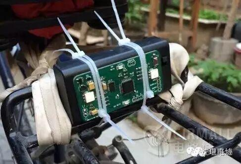
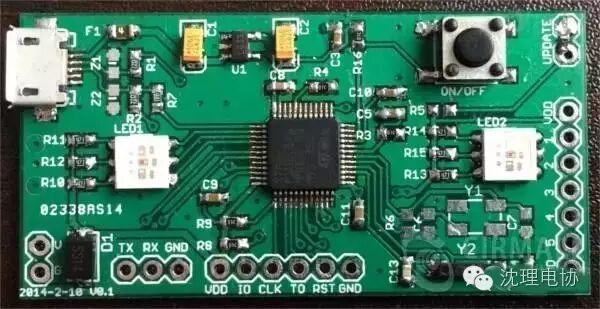
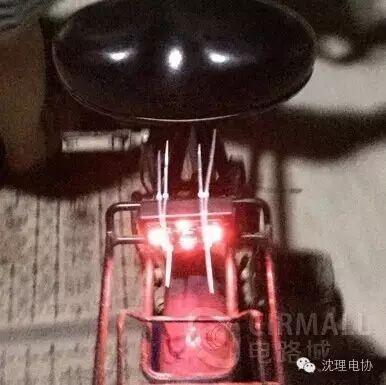
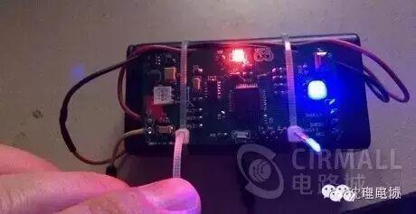

使用小程序
自动刹车灯是一个小巧的电路板，在刹车减速时自动亮起。可以将其安装在自行车上，用于警示其他车辆和行人。自动刹车灯由电池供电并内置加速度传感器，因此无需额外连接其他线缆。使用两节5号电池时，设计待机时间为一年以上（待机功耗66微安），基本可以实现永不关机，即装即忘。

体积2.8cm * 5.5cm(PCB尺寸)。
自动识别减速刹车。
停车自动休眠，设计待机时间一年以上。
STM32F103C8T（STM 32F103C8T数据手册）处理器
两个全彩LED灯，两个红色LED（1206）
加速度传感器ADXL345（ADXL345数据手册）
一个三线串口
一个三线SWD接口

自动刹车灯共有三个工作模式：刹车灯模式、水平仪模式和呼吸灯模式。启动后自动进入刹车灯模式，按下按键后会依次在三个模式中切换。三种模式下加速度传感器 的参数不同，但在静止时设备都会自动休眠，可以通过震动或者按键唤醒。设备使用两节5号电池供电，设计休眠时间超过12个月（实测待机电流66微安）。设 备主要工作于自动刹车灯模式，其余两种模式是为了演示设备的能力。
设备当作自动刹车灯使用时应当使用扎带等方式固定于自行车座椅下或后 轮货架上。固定完成后将开关调至ON端，在之后的使用中可以不必关闭。自动刹车灯在车辆静止30秒之后自动休眠，在监测到连续震动之后自动唤醒。工作时， 如果没有监测到刹车，自动刹车灯左右两个LED均以低亮度显示黄色。当车辆刹车时，自动刹车灯的四只LED均以高亮显示红色。

设备当作水平仪使用时，可以检测设备当前的水平状态。其用四个方向的LED显示当前倾斜的一端，哪一端亮表示哪一端向下倾斜。其用两度表示倾斜的程度，亮度越高表示倾斜越多，共有16级亮度。
设备工作于呼吸灯模式下时，会依次以渐强和渐弱的形式点亮各LED，显示呼吸灯的效果。这种模式下加速度传感器不工作。
